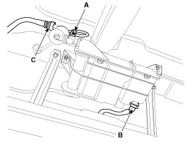
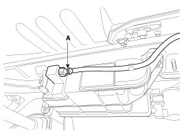
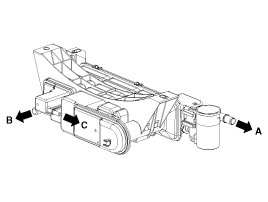

Evaporative Emission Control Canister: Service and Repair
Removal
1. Turn the ignition switch OFF and disconnect the battery negative (-) cable.
2. Disconnect the canister close valve connector (A).
3. Disconnect the vapor tube quick-connector (B) and the ventilation tube quick-connector (C).

4. Disconnect the vapor tube quick-connector (A).

5. Remove the canister assembly after removing installation bolt/nuts.
Inspection
1. Check for the following items visually.
- Cracks or leakage of the canister
- Loose connection, distortion, or damage of the vapor hose/tube

A: Canister <-> Atmosphere
B: Canister <-> Intake Manifold
C: Canister <-> Fuel Tank
Installation
Installation is the reverse of removal.
Canister installation bolt/nut:
19.6 - 29.4 N.m (2.0 - 3.0 kgf.m, 14.5 - 21.7 lb-ft)